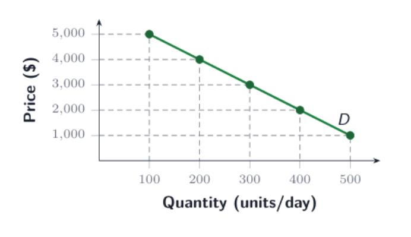
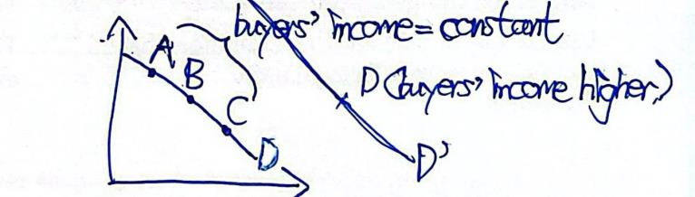
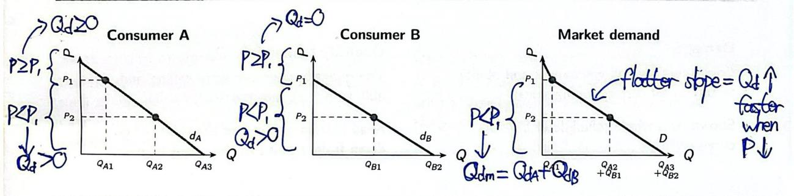
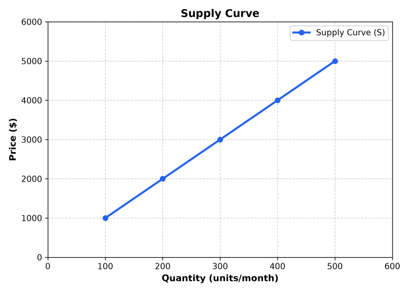
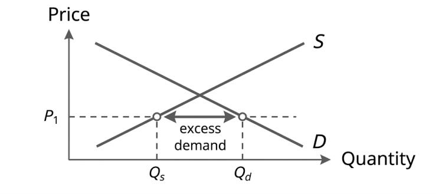
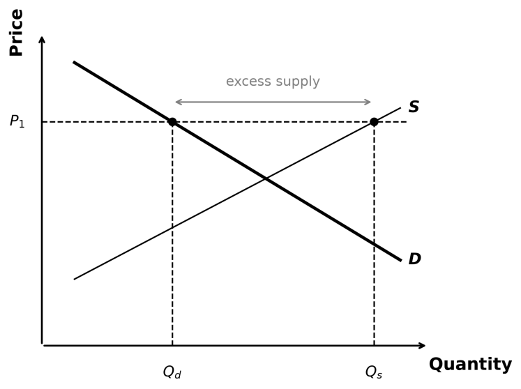
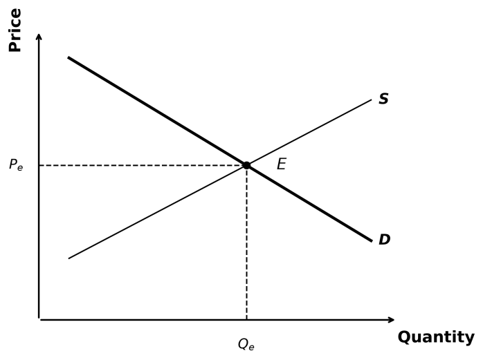

Demand is the set of quantities of a good that consumers are willing and able to buy at all corresponding prices over a period of time, other things being constant.
Would pay for the good.
Can afford the good.
Consider each possible price.
Same period; other things stay the same.
Demand is the whole buying plan across all these prices. At one price, the amount buyers are willing and able to buy is quantity demanded.
Want vs demand
Want: a desire to obtain a good, considered without regard to the cost of obtaining it.
Demand: the whole plan of quantities a consumer is willing and able to buy at all corresponding prices over a period.
Example: Mr Wan may want a $5.8 million Lamborghini Huracan STO, but if he cannot afford it, his quantity demanded is zero at the price of $5.8 million.
Demand curve, schedule and law
Demand curve: a graph showing the quantity demanded at each price.
Demand schedule: a table showing the quantity demanded at each price.

A demand curve plots quantity demanded against price, other things being constant.
Law of demand: an increase in the price of a good will result in a decrease in its quantity demanded, and vice versa, other things being constant.
The law concerns the good's own price and a movement along the same demand curve.
A change in the good's own price moves along a given demand curve. When another factor affecting demand changes, the demand curve shifts.
The law of demand assures other things being constant. First ask whether another factor affecting demand changed.
No: other things stayed the same. Use the law of demand to explain how the good's own price affects quantity demanded.
Yes: another factor also changed. The change in quantity cannot be explained by the price change alone.

When a factor other than price changes — e.g. buyers' income rises — the whole demand curve shifts rightward.
If price and quantity both rise, this alone does not show a violation of the law of demand.
Market Demand
Individual vs market
Individual demand: the demand of one buyer.
Market demand: the combined demand of all consumers in the market.
Market Qd at price Pi = Consumer A's Qd at Pi + Consumer B's Qd at Pi + all other buyers' Qd at Pi.
Horizontal summation
At each price, add A's and B's quantities demanded. Repeat for every price.
At P1, B buys nothing, so market Qd = QA1.
At P2, market Qd = QA2 + QB1.
B starts buying below P1, so the market curve has a kink at that price.

At each price, add A's and B's quantities demanded. The market curve is flatter and has a kink where B enters.
Relative Price
Definitions
Normal price: the price of a good expressed in terms of money.
Relative price: the price of a good expressed in terms of another good.
Relative price of X in terms of Y = normal price of X / normal price of Y.
Relative price tells us how much of Y we give up to get one unit of X.
A decrease in the relative price of Good X in terms of Good Y will result in an increase in the proportion of Good X in the total quantity of X and Y consumed, and vice versa, other things being constant.
If one unit of X costs fewer units of Y, people choose a larger proportion of X, other things being constant.
Proportion means the amount of X as a share of the total amount of X and Y. It does not tell us that the number of units of X must rise.
Example 1 — shipping adds the same $100 to each bottle
Bordeaux prices are $500 for fine wine and $100 for table wine. Shipping either bottle to Hong Kong costs $100. Preferences for wine and table wine are assumed to be the same in both regions.
In Bordeaux, one bottle of fine wine costs five bottles of table wine. In Hong Kong, it costs three.
Fine wine: $500 to $600. The price rises by 100/500 × 100% = 20%.
Table wine: $100 to $200. The price rises by 100/100 × 100% = 100%.
The price of fine wine rises by a smaller percentage. Its relative price in terms of table wine therefore falls. Other things being constant, fine wine makes up a larger proportion of consumption. The average quality is higher.
Example 2 — taxi trips after a rise in flagfall
The flagfall is the starting fare. Suppose it rises from $27 to $29 (ΔPlong = ΔPshort = +$2). Both a long trip and a short trip cost $2 more; other fare charges stay the same.
A long trip costs more to begin with, so the $2 increase is a smaller percentage of its fare.
The relative price of a long trip in terms of a short trip falls.
Other things being constant, long trips make up a larger proportion of all taxi trips. The average distance per trip rises.
Example 3 — visits after a cut in the entrance fee
Compare a long visit (6 hrs = $700 + 6 × $100 = $1,300) and a short visit (2 hrs = $700 + $100 × 2 = $900) to the same tourist spot. ($1,300 / $900 = 1.4×) Both include the same entrance fee. A long visit also takes more time, so it has a higher total cost when time cost is included.
A cut in the entrance fee reduces both total costs by the same amount. (Long visit: 6 hrs = $300 + 6 × $100 = $900. Short visit: $300 + $100 × 2 = $500. $900 / $500 = 1.8×) This is a smaller percentage fall for the long visit.
The relative cost of a long visit in terms of a short visit rises.
Other things being constant, long visits make up a smaller proportion of all visits. The average length of a visit falls.
Supply
Definition
Supply is the set of quantities of a good that producers are willing and able to sell at all corresponding prices over a period of time, other things being constant.
At one price, the amount sellers are willing and able to sell is called quantity supplied (Qs).

The supply curve plots quantity supplied against price, other things being constant.
Supply schedule example
Price ($)
Qs per month
1000
100
2000
200
3000
300
4000
400
5000
500
Individual vs market supply
Individual supply: the supply of one seller.
Market supply: the combined supply of all sellers in the market.
Qs(Pi) = Qs,A(Pi) + Qs,B(Pi) + … + Qs,n(Pi).
Pi means the price we are looking at; A, B, ..., n are the sellers. At this same price, add the quantities they are willing and able to sell. Repeat for each price. This is horizontal summation.
Law of supply
An increase in the price of a good will result in an increase in its quantity supplied, and vice versa, other things being constant.
Higher price → more revenue for each unit sold → sellers are more willing to sell → higher quantity supplied.
Three points to remember about supply
Willing and able: a shop may be willing to sell face masks. If it has run out, it cannot sell any at that time.
Whole curve vs one point: supply is the whole plan at all prices; Qs is the planned quantity at one price.
Same time period and conditions: use the same time period. Along one supply curve, other things affecting supply stay the same. A change in the good's own price changes quantity supplied along the curve; a change in another factor affecting supply shifts the curve.
Market Equilibrium
Excess demand and excess supply
Quantity demanded (Qd): what buyers are willing and able to buy at this price.
Quantity supplied (Qs): what sellers are willing and able to sell at this price.
Quantity transacted (Qt): the quantity actually bought and sold.
Qt = min{Qd, Qs}.
If Qs > Qd, sellers offer fewer units than buyers plan to buy… here sellers offer more than buyers plan to buy, so Qt = Qd. If Qd > Qs, buyers plan more than sellers offer, so Qt = Qs.

When price is below equilibrium, Qd > Qs. Only Qs is actually transacted.

When price is above equilibrium, Qs > Qd. Only Qd is actually transacted.
Market equilibrium
A state in which quantity demanded equals quantity supplied and there is no tendency for the price to change.

At equilibrium, Qd = Qs = Qe, and there is no tendency for the price to change.
Equilibrium price (Pe): the market-clearing price where Qd = Qs.
Equilibrium quantity (Qe): the quantity demanded and supplied at Pe.
At equilibrium, planned quantities equal actual sales:
Qd = Qs = Qe = Qtransacted.
Buyers can buy the quantity they planned; sellers can sell the quantity they planned.